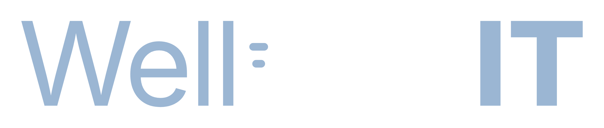
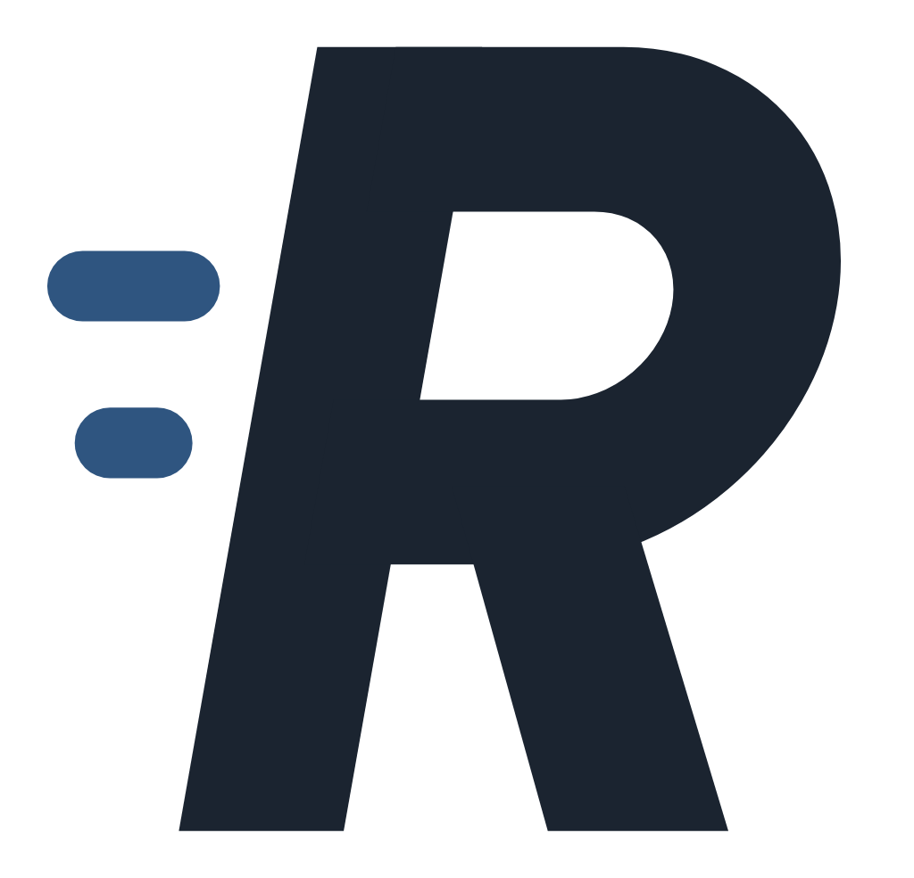
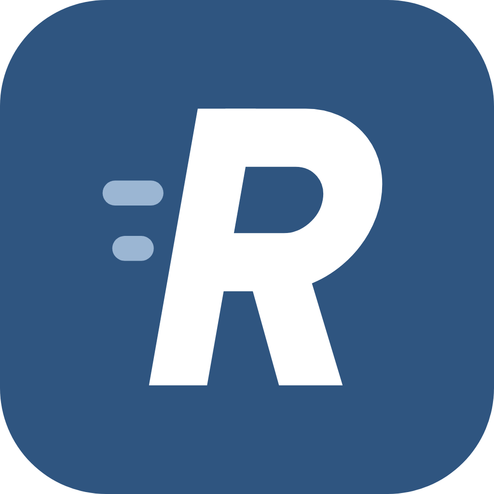
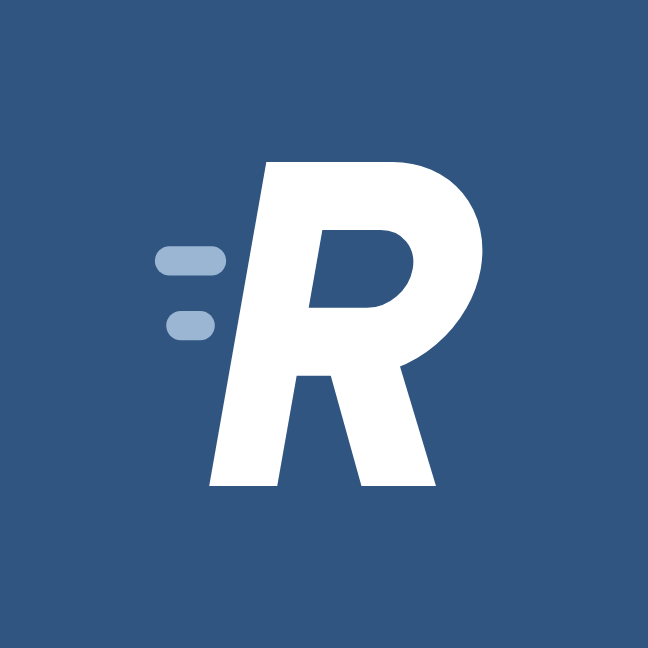
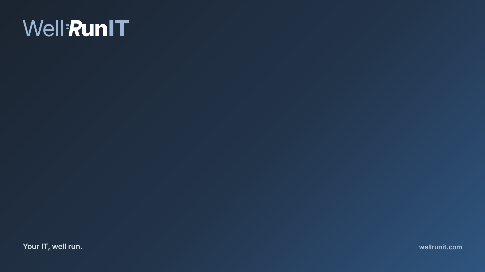
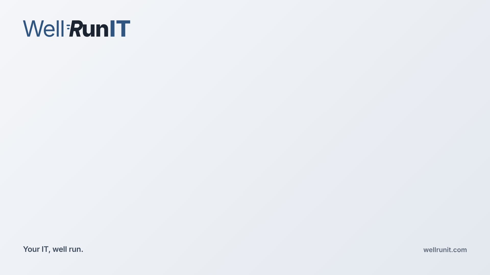

Full color
For white and light backgrounds. The main logo.
Every approved Well Run IT logo, ready to download. SVG is the original and scales to any size. PNG has a transparent background. JPG has the background shown. Font: Inter.
For white and light backgrounds. The main logo.

For dark backgrounds, like the website footer.
For photos and colored backgrounds.
Graphite only, for print, stamps and forms.

The R in stride, on its own. Transparent.

For dark or colored backgrounds. Transparent.

White R with light slate marks, for dark backgrounds.

Rounded slate square. The ICO files are for Windows shortcuts and browser tabs.

648 by 648, the largest photo size Microsoft 365 uses. Outlook and Teams show it as a circle, so the R is centered with room around it.

1920 by 1080 (16:9). Logo top left, so it stays clear of you.

#2f5580Well, IT, motion marks, buttons#1b2430Run, text, dark backgrounds#9bb6d3Logo on dark backgrounds#eef0f3Page backgroundEarlier logo options: final round, custom letters, icons, wordmark rounds.